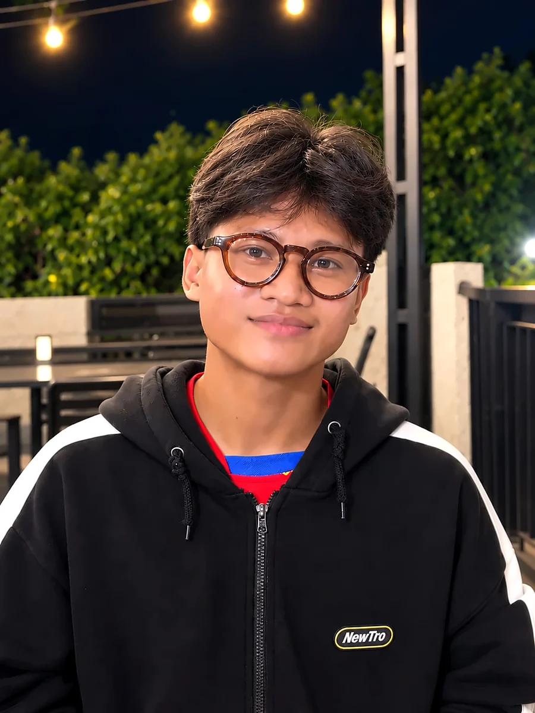

Open to internships in AI/ML, data science, computer vision and GISTerbuka untuk magang di AI/ML, data science, computer vision, dan GIS
Machine learning and spatial data science, with the math to back it.Machine learning dan spatial data science, didukung matematika yang kuat.
I'm Dimas, a Computer Science & Mathematics student at BINUS University. I work on NLP, geospatial analytics and optimization, and on team projects I usually own the model and the statistics behind it.Saya Dimas, mahasiswa Computer Science & Mathematics di BINUS University. Saya fokus di NLP, analitik geospasial, dan optimasi. Di proyek tim, saya biasanya memegang model dan statistik di baliknya.
fig. 0Simulated annealing searching a multimodal surface. It sometimes accepts an uphill step so it doesn't get stuck in the first valley.Simulated annealing mencari titik terendah di permukaan multimodal. Sesekali ia menerima langkah naik supaya tidak terjebak di lembah pertama.
Favorite Winner
MAPID WebGIS Competition 2026, as project lead.MAPID WebGIS Competition 2026, sebagai project lead.StaSIUN ↓
0.915 F1
Entity recognition on financial headlines with fine-tuned BERT.Pengenalan entitas pada headline keuangan dengan BERT yang di-fine-tune.Financial News Miner ↓
What I can help your team with.Yang bisa saya bantu di tim Anda.
fig. 1The same surface from another angle.Permukaan yang sama dari sudut lain.
ML & NLPFine-tuning BERT and FinBERT, named-entity recognition, aspect-level sentiment, topic models.Fine-tuning BERT dan FinBERT, named-entity recognition, sentimen per aspek, topic modeling.FNM
LLMTwo-layer extraction of structured data from messy field notes, and an assistant that answers by calling a scoring engine (tool calling).Ekstraksi dua lapis data terstruktur dari catatan lapangan, dan asisten yang menjawab dengan memanggil mesin skor (tool calling).StaSIUN
GISPostGIS, street-network isochrones, spatial joins, OpenStreetMap, MapLibre.PostGIS, isochrone berbasis jaringan jalan, spatial join, OpenStreetMap, MapLibre.StaSIUN
Computer visionMulti-view geometry: RANSAC, homography, bundle adjustment. My current project.Geometri multi-view: RANSAC, homography, bundle adjustment. Proyek saya saat ini.NowKini
02 · AI, data & GIS projectsProyek AI, data & GIS
Three projects, each with a result you can check.Tiga proyek, dengan hasil yang bisa dicek.
On stage at MAPID Catalyst 2026, Favorite WinnerDi panggung MAPID Catalyst 2026, Favorite WinnerSEPI score on every KRL stationSkor SEPI di setiap stasiun KRLSudirman: circle 2.18 km² vs walkable area 0.92 km²Sudirman: lingkaran 2,18 km² vs area terjangkau 0,92 km²Walking catchment and the places inside itArea jangkauan jalan kaki dan tempat di dalamnyaRanking with confidence boundsPeringkat dengan batas keyakinanAssistant that explains a score by calling the scoring engineAsisten yang menjelaskan skor dengan memanggil mesin skor
A WebGIS that maps where ad space at 45 Jakarta KRL stations is worth the most, along with tenant and naming-rights potential.WebGIS yang memetakan stasiun mana yang adspace-nya paling bernilai di 45 stasiun KRL Jakarta, beserta potensi tenant dan naming rights.
ProblemMasalahNon-farebox revenue is only about 4% of KAI's income. StaSIUN shows which stations' commercial space (ad space, tenants, naming rights) to optimize first to raise it.Pendapatan non-farebox KAI hanya sekitar 4%. StaSIUN menunjukkan ruang komersial stasiun mana (adspace, tenant, naming rights) yang paling layak dioptimalkan lebih dulu untuk menaikkannya.
My partPeran sayaLed a team of 5; owned the scoring model, its statistics and its robustness checks.Memimpin tim 5 orang; memegang model skor, statistik, dan uji ketahanannya.
45
stations scoredstasiun dinilai
1,034
field notes extractedcatatan lapangan diekstraksi
46%
of a circle buffer is walkablebuffer lingkaran yang terjangkau
How it worksCara kerjanya
Five indicators (transport, economy, access, urban, commercial), weighted with Entropy + AHP (CR = 0.0072).Lima indikator (transportasi, ekonomi, akses, urban, komersial), dibobot dengan Entropy + AHP (CR = 0,0072).
Walking isochrones on the street network instead of circle buffers.Isochrone jalan kaki di jaringan jalan, bukan buffer lingkaran.
Bootstrap BCa intervals and shrinkage toward LDA archetypes where data is thin; stations ranked by the lower bound; ranking tested across 5 weighting schemes and 1,000 weight perturbations.Interval bootstrap BCa dan shrinkage ke arketipe LDA saat data tipis; stasiun diurutkan dengan batas bawah; peringkat diuji dengan 5 skema bobot dan 1.000 perturbasi bobot.
Two-layer extraction of ads, tenants and facility conditions from field notes, capped at 15% of any score and cross-checked spatially.Ekstraksi dua lapis untuk iklan, tenant, dan kondisi fasilitas dari catatan lapangan, dibatasi maksimal 15% dari skor dan divalidasi silang secara spasial.
Pipeline output: Microchip positive, Apple negative, in one headlineOutput pipeline: Microchip positif, Apple negatif, dalam satu headlineThe pipeline: BERT tags entities, FinBERT scores each onePipeline-nya: BERT menandai entitas, FinBERT menilai tiap entitasAccuracy by headline type; conflicting headlines 0.616 → 0.857Akurasi per tipe headline; headline konflik 0,616 → 0,857
NLPText Mining course · groupMata kuliah Text Mining · kelompok
Financial News Miner
Finds every company in a financial headline and reads the sentiment toward each one, because one headline can be good news for one firm and bad for another.Menemukan setiap perusahaan di headline keuangan dan membaca sentimen terhadap masing-masing, karena satu headline bisa jadi kabar baik untuk satu perusahaan dan buruk untuk yang lain.
ApproachPendekatanNER with BERT, then entity-level sentiment with FinBERT; compared against CRF and TF-IDF + SVM baselines on 10,753 annotated headlines.NER dengan BERT, lalu sentimen per entitas dengan FinBERT; dibandingkan dengan baseline CRF dan TF-IDF + SVM pada 10.753 headline beranotasi.
OptimizationOptimasiPaper · with Kevin TanPaper · bersama Kevin Tan
Food rescue routingRute food rescue
Routes vehicles that collect surplus food from restaurants and supermarkets, where every stop has a time window because the food spoils.Menyusun rute kendaraan yang mengambil makanan berlebih dari restoran dan supermarket, dengan time window di setiap titik karena makanannya cepat basi.
ApproachPendekatanVRPTW solved with simulated annealing (2-opt, relocate, inter-route swap) on the Solomon C101 benchmark.VRPTW diselesaikan dengan simulated annealing (2-opt, relokasi, tukar antar rute) pada benchmark Solomon C101.
Software, hardware and competitions.Software, hardware, dan kompetisi.
Guardian app (demo data)Aplikasi wali (data demo)Information board and eventsPapan informasi dan acaraSystem architectureArsitektur sistem
LiveSolo · 2026
Kaffa
A pesantren management platform, being grown into an LMS that goes beyond CRUD: real-time student tracking over BLE on an IoT WebGIS, and spatial analytics on the data it collects. Running at Pesantren Bakkatul Munawaroh; client 2 is next.Platform manajemen pesantren yang sedang dikembangkan menjadi LMS yang tidak berhenti di CRUD: pelacakan santri real-time lewat BLE di atas WebGIS IoT, dan analisis data spasial dari data yang terkumpul. Sudah dipakai di Pesantren Bakkatul Munawaroh; berikutnya client kedua.
Live nowSudah berjalanQuran memorization records, prayer attendance, grading and parent reports.Catatan hafalan Quran, absensi sholat, penilaian, dan laporan untuk wali santri.
Next, already designedBerikutnya, sudah dirancangBLE tags and gateways, zone-level presence and exit alerts, per-role access, and gateway placement solved as an integer program.BLE tag dan gateway, kehadiran per zona dan peringatan keluar area, hak akses per peran, dan letak gateway dihitung sebagai integer programming.
Built aloneDikerjakan sendiri · Python · Flutter · VPS
DashboardProject workspaceWorkspace proyekTeam chatChat tim
Group · backend & architectKelompok · backend & architect2026
Orchestra
Slack, ClickUp and the like each add one more place to check. Orchestra doesn't replace the tools a software team already uses; it ties Notion tasks, GitHub activity and Zoom meetings into one workspace with team chat, so status doesn't have to be re-typed between them.Slack, ClickUp, dan sejenisnya masing-masing menambah satu tempat lagi yang harus dicek. Orchestra tidak menggantikan tool yang sudah dipakai tim software, tapi menyatukan task Notion, aktivitas GitHub, dan meeting Zoom dalam satu workspace beserta chat tim, jadi status tidak perlu ditulis ulang di tiap tempat.
My partPeran sayaBackend and architecture: webhook integrations, encrypted chat, passkey login.Backend dan arsitektur: integrasi webhook, chat terenkripsi, login passkey.
IoTGroup · device leadKelompok · lead perangkat2025
Smart Flood Irrigator
An ESP32 device that reads water levels in two reservoirs and moves water to ease flooding, with a live app. I built the device and firmware and co-wrote the paper.Perangkat ESP32 yang membaca tinggi air di dua reservoir dan memindahkan air untuk mengurangi banjir, lengkap dengan aplikasi real-time. Saya membuat perangkat dan firmware-nya serta ikut menulis paper-nya.
Home pageHalaman berandaMap of vendors and eventsPeta PKL dan acaraEvents and notificationsAcara dan notifikasiOpening and loginPembuka dan login
Semifinalist · Gemastik XVIIISemifinalis · Gemastik XVIIITeam leadKetua tim
RAMEIN
A smart-city app that maps official street-vendor spots, local services like tailors and welders, and safe public spaces with their events. Semifinalist in the Smart City division.Aplikasi smart city yang memetakan lokasi resmi PKL, jasa mikro seperti penjahit dan tukang las, serta ruang publik yang aman beserta acaranya. Semifinalis divisi Smart City.
Home pageHalaman berandaProduct page with its µg/m³ impactHalaman produk dengan dampak µg/m³
Best ProjectGroup · full-stackKelompok · full-stack2025
Want To Sell
A preloved marketplace that shows how much air pollution each purchase helped avoid, in µg/m³. Chosen as the best project in class.Marketplace barang preloved yang menampilkan berapa banyak polusi udara yang berhasil dikurangi dari setiap pembelian, dalam µg/m³. Terpilih sebagai proyek terbaik di kelas.
Scrolling worldDunia yang bergulirFight sceneAdegan bertarung
Game · C++Game · C++Solo · since 2024Solo · sejak 2024
Honkai Moon Lite
A terminal RPG in C++ with only the standard library. The player is always drawn at the centre of a small window onto a 150×150 world, so it is the map that moves, not the character. The world is procedurally generated, and enemies chase using Manhattan-distance pathfinding.RPG terminal dengan C++ tanpa library tambahan. Pemain selalu digambar di tengah jendela kecil dari dunia 150×150, jadi yang bergerak adalah petanya, bukan karakternya. Dunianya dibuat secara prosedural, dan musuh mengejar dengan pathfinding berbasis jarak Manhattan.
GIS · coursekuliahJapan AQI Heatmap.A Flask service that pulls live air-quality readings for Japan from the WAQI API and shows them as a Leaflet heatmap. Geo-Informatics course.Layanan Flask yang mengambil data kualitas udara Jepang secara langsung dari API WAQI dan menampilkannya sebagai heatmap Leaflet. Mata kuliah Geo-Informatics.2025
PaperPaperQuarter-car suspension model.Model suspensi quarter-car.State-space model, modal decomposition and RK 4(5) simulation of a car suspension over a speed bump. Differential Equations, group of 5.Model state-space, dekomposisi modal, dan simulasi RK 4(5) suspensi mobil saat melewati polisi tidur. Persamaan Diferensial, kelompok 5 orang.See it drawnLihat grafiknya ↓2025
04 · Try itCoba
The math behind the results, drawn live.Matematika di balik hasilnya, digambar langsung.
Route distanceJarak rute
2119.00 → 1698.57
VehiclesKendaraan
27 → 21
ComputeKomputasi
0.42 s
Circle, 833 mLingkaran, 833 m
2.18 km²
10-min walkJalan kaki 10 menit
0.92 km²
Walkable sharePorsi terjangkau
42%
State
4 variables4 variabel
Solver
RK 4(5) adaptiveadaptif
Free responseRespons bebas
Re λ < 0
Food rescue routing. Curve traced from the run's convergence plot; start and end values are exact.Rute food rescue. Kurva dijiplak dari plot konvergensi; nilai awal dan akhir persis.
StaSIUN, Sudirman station. The outline is a sketch of the measured isochrone; the areas are measured.StaSIUN, stasiun Sudirman. Garis bentuknya sketsa dari isochrone terukur; luasnya hasil pengukuran.
Differential Equations paper (group of 5): a quarter-car suspension after a speed bump, simulated in your browser with illustrative parameters.Paper Persamaan Diferensial (kelompok 5 orang): suspensi quarter-car setelah melewati polisi tidur, disimulasikan di browser dengan parameter ilustratif.
05 · NowSaat ini
What I'm working on.Yang sedang saya kerjakan.
Computer vision · in progressberjalanPlane-Aware Three-View Structure from Motion.How accurately three photos recover planar structure, with an error model in cm rather than only reprojection error in pixels, which says little about real-world size. A self-initiated paper, started before my computer vision course.Seberapa akurat tiga foto merekonstruksi struktur bidang, dengan model error dalam cm, bukan sekadar reprojection error dalam piksel yang kurang menggambarkan ukuran di dunia nyata. Paper self-initiated, dimulai sebelum mata kuliah computer vision.
Transport data · in progressData transportasi · berjalanRide-hailing and TransJakarta: feeder or rival?Ojek online dan TransJakarta: feeder atau rival?With two lecturers. Rebuilding a stop-to-stop Origin-Destination matrix from tap data with maximum entropy, then adding GIS accessibility.Bersama dua dosen. Menyusun ulang matriks Origin-Destination antar halte dari data tap dengan maximum entropy, lalu menambahkan analisis aksesibilitas GIS.

06 · AboutTentang saya
Mohammad Dimas Afradika.
Computer Science and Mathematics at BINUS University, GPA 3.66 / 4.00. I prefer understanding a few models deeply over using many I can't explain.Computer Science dan Mathematics di BINUS University, IPK 3,66 / 4,00. Saya lebih memilih memahami sedikit model secara mendalam daripada memakai banyak model yang tidak bisa saya jelaskan.
MathMatematikaNumerical analysis, real analysis, mathematical statistics, operation research, linear algebra, projective geometryAnalisis numerik, analisis real, statistika matematika, riset operasi, aljabar linear, geometri proyektif
RecognitionPencapaianFavorite Winner, MAPID WebGIS 2026 · Semifinalist, Gemastik XVIII 2025 · Best Project in class 2025 · papers on food rescue routing, quarter-car suspension and IoT flood irrigationFavorite Winner MAPID WebGIS 2026 · Semifinalis Gemastik XVIII 2025 · Best Project di kelas 2025 · paper tentang rute food rescue, suspensi quarter-car, dan irigasi banjir IoT
Beyond projectsDi luar proyekMentor and tutor for other students on campus; active in student organizations. Details onMentor dan tutor untuk mahasiswa lain di kampus; aktif di organisasi mahasiswa. Detailnya diLinkedIn ↗